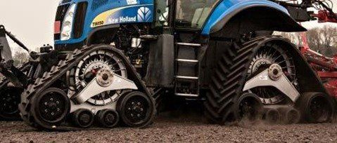

Bandendruk en rupsbanden (tracks)
Steeds zwaardere lasten en vaker rijden onder te natte omstandigheden. Let op de banden.
Bodemverdichting is te beperken door een zo laag mogelijke bandenspanning te kiezen en de aslast niet te hoog te laten worden. Je kunt ook voor rupsbanden kiezen. De druk op de bodem is dan lager. Ook het brandstofverbruik is duidelijk lager. Een gewone landbouwband zakt meer de bodem in dan een rupsband is en je rijdt daardoor met een band als het ware steeds een berg op.
Bandenspanning en aslast
Bodemverdichting ontstaat door een onjuiste balans tussen de door berijding uitgeoefende drukken/krachten en de draagkracht van de grond. Bodemverdichting wordt voorkomen als de door banden uitgeoefende druk lager is dan de draagkracht van de bodem. In de praktijk worden de toelaatbare as en wiellasten meestal overschreden door de transportvoertuigen die bij de oogst en mesttransporten worden gebruikt.De reactie van de grond op het contact wiel-grond is zeer complex. Hierin zijn het vochtgehalte en verticale bodemdruk de belangrijkste parameters.
De volgende
vuistregels
gelden voor de maximaal toelaatbare gemiddelde bodemdruk:
maximale bodemdruk normaal: 1 barvoorjaar (bouwland): 0,5 bar.
Veel voorkomende bandendrukken:
Transport 2 - 6 bar
Voorwiel tweewielaangedreven trekker 2 - 3 barMaaidorsers 2 - 3 barZelfrijdende bietenoogstmachines 2 - 3 bar
Een gemiddelde bodemdruk van 1 bar komt overeen met een last van 10 ton op een contactvlak van 1 m². De grootste landbouwband (met een breedte van 110 cm en een diameter van 186cm) heeft bij de juiste belasting/bandenspanning een contactvlak van ongeveer 0,5 m². Dit betekent bij toepassing van de 1 bar regel dat de grootste band maximaal 5 ton mag dragen. Bij toepassing van de 1 bar regel zijn de volgende lasten toelaatbaar:- Wiellast: maximaal 5 ton.- Aslast: maximaal 10 ton
Maximale lasten voor een- twee- en drie-assige wagens (gewichten in tonnen)
Enkele as Gestuurde tandemas Gestuurde drieasser
Maximum nuttige as 8 15 22Maximum voertuiggewicht 10 20 30Maximum aslast 10 10 10Maximum wiellast 5 5 5Een groot aantal voertuigen heeft een te hoge bodemdruk. De oplossing moet worden gezocht in een aantal maatregelen om deze bodemdruk te verlagen:-Bredere banden.-Meer banden-Verlagen bandenspanning (dit is niet zonder gevolgen voor last of snelheid)-Rubberrupsen
Niet op alle voertuigen zijn de grootste banden te plaatsen, dus zal men moeten werken met lagedrukbanden en een drukwisselsysteem. Hierdoor kan een voertuig met 30 ton totaalgewicht toch met een toelaatbare bodemdruk van maximaal 1 bar op het land en met een hogere druk weer op de weg rijden.Een drukwisselsysteem verzorgt een lage bandenspanning op het veld.Door toepassing van een drukwisselsysteem rijdt de trekkerachterband op de weg bijvoorbeeld op 1,7 bar en in het veld op 0,8 bar bandenspanning.
Voor de hoofdbewerking van het zaaibed wordt steeds meer de driewielige trekker gebruikt (zogenaamde “Trike”). Een 3 meter Trike kan met drie brede banden op lage druk een 3 meter breed homogeen aangedrukt zaaibed maken.
Met een halfrupssysteem is een lage bodemdruk te realiseren. Het contactvlak van deze 37,5 cm brede rupsband is vergelijkbaar met het contactvlak en een 105 cm brede 66x43.00-25 luchtband.
De rubberen rupsen kunnen een goede aanvulling zijn wanneer de banden geen oplossing meer kunnen bieden. Door het gebruik van rupsen kan de bodemdruk worden verlaagd tot 0,2 tot 0,5 bar. Met name de halfrupssystemen zijn een goede oplossing om de trekkracht te vergroten onder moeilijke omstandigheden.
Algemeen:- Bandenspanning op het land: 0,4 tot 0,8 bar.- Meerassers moeten gestuurd zijn.

Het tracksysteen, bekeken en vergeleken
Onderstaande tekst over rupsbanden/tracksystemen is een onderdeel van de afstudeerscriptie Grip op Bodemverdichting van Arne Jens Kraaij (Aeres, Dronten). Het zijn de hoofdstukken 4 en 5. Onze dank aan Arne Jens voor de toestemming deze uitvoerige en grondige tekst te mogen plaatsen. De complete tekst met meer informatie over bodemstructuur en verdichting is te vinden op www.greeni.nl.
Verschillende tracksystemen
Naast verschillen in afmetingen tussen tracksystemen, zijn er ook technische verschillen. Het grootste verschil zit in de manier van monteren onder een trekker of zelfrijdende machine. In hoofdlijnen zijn er twee onderscheidende technieken: rechtstreeks op een vlakke wielnaaf gemonteerd of met een groot hoofdlager. Deze laatste montagetechniek is vergelijkbaar aan die van een normaal wiel, waarbij de velg ook een gat in het hart heeft. In figuur 12 zijn de verschillen goed zichtbaar, bij montage rechtstreeks op de wielnaaf neemt de transportbreedte van de machine toe. Het systeem met een hoofdlager biedt ruimte voor een eindaandrijving of steek-as, de transportbreedte is nagenoeg gelijk aan een band met dezelfde breedte. Het laatstgenoemde systeem vraagt meer onderhoud vanwege het grote hoofdlager (Heugten, 2013).
Figuur 12: links montage op vlakke naaf, rechts groot hoofdlager met ruimte voor eindaandrijving. (Camso, 2016)
Er bestaat nog een derde aanbouwtechniek waarbij gebruik wordt gemaakt van een aanbouwframe. Dit systeem wordt vaak gebruikt voor de smalle rupsen om cultuurwielen te vervangen. Vanwege het feit dat dit niet een systeem is dat eenvoudig uitwisselbaar is met normale wielen en er weinig tot geen onderzoek is gedaan naar rupsen met deze afmetingen wordt deze techniek niet in dit afstudeerkstuk behandeld.
Naast de verschillende aanbouwtechnieken is er ook een kenmerkend verschil in spansystemen. Zo maakt producent Soucy gebruik van een mechanisch spansysteem waar Zuidberg en Camso kiezen voor een gesloten hydraulisch spansysteem. Het voordeel van een mechanisch spansysteem is dat deze betrouwbaar en eenvoudig is. Het gesloten hydraulisch spansysteem gebruikt een cilinder met een accumulator, deze moet een keer per jaar op druk worden gebracht. De accumulator zorgt er voor dat de cilinder een dempende werking heeft en dus schokken op kan vangen (Heugten, 2013).
Tracksysteem & Landbouwband
De druk die een landbouwmachine overdraagt op de bodem is afhankelijk van de massa van de machine en het contactoppervlak met de grond. Als de massa gelijk blijft maar het contactoppervlak neemt toe, dan neem de druk per vierkante centimeter op de bodem af. Om het contactoppervlak groter te maken kan men kiezen voor een bredere band of rups, er zijn echter grenzen.
De landbouwband
Gangbare landbouwbanden zijn er tot een breedte van 1050 millimeter, er is een bredere band ontwikkeld deze is 1250 millimeter (Mitas, 2014), maar deze is vrijwel niet toepasbaar in de Nederlandse landbouw. Naast de breedte van de band, heeft ook de hoogte van de band invloed op het contactoppervlak. Hoe hoger een band is, hoe groter het contactoppervlak wordt, uiteraard zijn er ook hier grenzen. Een bandenmaat wordt aangeduid in: breedte van de band, flankhoogte en de binnenmaat in inch, bijvoorbeeld: 650/75R38. De breedte is 650 millimeter, de flankhoogte is 75% van de breedte en de binnenmaat van de band en dus de buitenmaat van de velg, is 38 inch. Een 650/65R42 heeft nagenoeg dezelfde hoogte, alleen is de flankhoogte lager en de binnenmaat groter. Dit betekent dat de band minder luchtinhoud heeft, dat resulteert in een lagere maximaal toegestane last. Bij een spanning van 1 bar is dit verschil ongeveer 1000 kilogram. Daarnaast kan een band met minder luchtinhoud minder afplatten bij een lage bandenspanning. Dit is tot slot de laatste en meest belangrijke factor om het contactoppervlak te kunnen vergroten. Hoe lager de bandenspanning is, hoe beter een band afplat (Huybrechts, 6 september 2013). Maar het verlagen van de bandenspanning kent ook grenzen. Als de bandenspanning afneemt neemt ook de maximaal toegestane wiellast af. In tabel 1 is de maximale belasting van een standaard trekkerband te zien bij verschillende spanningen en verschillende snelheden. Opvallend is het feit dat de tabel voor deze standaard band geen maximale wiellasten laat zien onder de 1.0 bar. Daaruit zou men kunnen concluderen dat de fabrikant dit niet raadzaam acht.
Tabel 1: maximale wiellast 650/75R32 band (Michelin, n.d.)

De Ultraflex band
De VF en IF, ook wel ultraflex banden zijn ontwikkeld om belast te worden bij relatief: lage bandenspanningen, hoge wiellasten en hoge snelheden. Dat blijkt ook uit tabel 2. De IF 650/75 R 30 is qua afmetingen vergelijkbaar met de standaard landbouwband uit tabel 1.

De aangegeven maximaal wiellasten voor deze banden zijn bij een snelheid van 65 kilometer per uur, zoals ook onderaan de tabel is af te lezen. Opvallend is dat deze snelheden bij de standaard band niet wordt aangegeven. De tabel gaat tot maximaal 2,4 bar omdat hierboven de IF band geen voordeel heeft ten opzichte van een standaard landbouwband. De IF band biedt tot 20% meer draagvermogen, de VF band tot 40% meer draagvermogen dan een standaard landbouwband van dezelfde afmetingen (Michelin, n.d.).
Het tracksysteem
Rupsen voor tracksystemen zijn verkrijgbaar in een aantal vaste breedtes: 610, 760 en 920 millimeter. Daarnaast heeft elk tracksysteem een vaste lengte, een mogelijkheid om het in contactoppervlak te variëren bij bijvoorbeeld transport op de weg of veldwerk ontbreekt. Er is wel een onderscheid te maken door gebruik van verschillende systemen. Er zijn grofweg drie variaties leverbaar met: twee, drie of vier tussenassen. In figuur 13 is het verschil te zien tussen een systeem met vier tussenassen en een systeem met twee tussenassen. Meer tussenassen betekent een groter contactoppervlak op de grond.
Figuur 13 tracksystemen met 4 en 2 tussenassen (Industry, 2015)
Er zijn verschillende varianten op de markt om voor elke machine een passende oplossing te kunnen bieden. Voorbeelden zijn: een kleiner aandrijfwiel voor montage op de vooras van een trekker, een asymmetrisch systeem waarbij het aandrijfwiel uit het midden is geplaatst, zoals het rechter tracksysteem in figuur 13. In figuur 14 is te zien dat door de asymmetrische vormgeving, de tracksystemen kunnen worden gemonteerd zonder dat de trap of brandstoftank moet worden gedemonteerd.

Figuur 14: tracksystemen met 2 tussenassen en asymmetrische vormgeving (mike_v, 2015).
Tracksysteem vs. Landbouwband
In theorie zal het grotere contactoppervlak van het tracksysteem moeten resulteren in een lagere bodemdruk. Of dit ook het geval is, is onder andere onderzocht in een onderzoek van: Wageningen UR, CAH Vilentum en de Universiteit van Uppsala in Zweden in opdracht van Boerderij (Knuivers, 2013). In dit onderzoek zijn twee zelfrijdende bunkerrooiers gebruikt waarvan bij de een de vooras is voorzien van Michelin CerexBib-IF 900/60 R-38 banden en bij de andere rooier werden voorop twee tracksystemen gemonteerd van Zuidberg met een rupsbreedte van 90 centimeter. Achterop beide rooiers waren standaard radiaalbanden, zonder IF-technologie, van 90 centimeter breed gemonteerd. De test is uitgevoerd met een volle bunker, waardoor de wiellast per wiel 14,2 ton bedraagt voor de rooier op banden. Bij de rooier op rupsen is die wiellast per rups 16,7 ton. Het verschil zit voornamelijk in het leeggewicht van de rooiers, de rooier met rupsen is een nieuwer model dat 8 ton meer weegt. Bovendien weegt een tracksysteem 1,5 ton meer dan een band. Bij een bandenspanning van 1,7 bar, is het contactoppervlak of voetprint van de IF-band 10.795 vierkante centimeter. Deze bandenspanning wordt door Michelin aangeraden bij deze wiellast. Voor het tracksysteem met 3 tussenassen is de voetprint 17.550 vierkante centimeter. Op een diepte van 20 centimeter zijn bodemsensoren geplaatst om verschillende bodemspanningen te kunnen meten. In figuur 15 is te zien wat de uitslag van deze test is. Ondanks het hoger totaal gewicht van de rooier op tracksystemen, is de spanning op 20 centimeter diepte lager dan die van de rooier op banden. Verder is opvallend dat de druk veroorzaakt door de rups niet mooi egaal is, maar dat de loopwielen van de tussenassen terug te zien zijn. Aan de rechterkant in de grafiek is de grondspanning te zien die de achterwielen van de rooiers hebben veroorzaakt, deze is bij de rupsrooier iets hoger omdat de totale massa groter was.
Figuur 15: bodemspanningen van IF-band en tracksysteem op 20 cm diepte (Knuivers, 2013)
In een ander onderzoek hebben Ansorge en Godwin aangetoond dat een track voor minder verticale bodemverplaatsing zorgt dan een landbouwband (Ansorge & Godwin, 2007). Dit onderzoek is uitgevoerd in een gecontroleerde laboratorium omgeving. Op deze manier zijn externe factoren zoals verschillende bodemstructuren of samenstellingen uitgesloten. In dit onderzoek zijn verschillende bandenmaten met verschillende bandenspanningen vergeleken met een Terra Trac systeem van Claas, zie figuur 16. In tabel 13 is een overzicht te zien van de verschillende bandenmaten, de verschillende bandenspanningen en met welke wiellasten er is gemeten. Voor dit onderzoek zijn conventionele landbouwbanden gebruikt die destijds veel onder combines werden gemonteerd. De bandenspanning is de aanbevolen spanning bij de gebruikte weillast. Met de 800/65 R32 is er ook getest met de helft van de aanbevolen bandenspanning, 1.25 bar in plaats van 2.5.
De genoemde bandenmaten in de tabel onder de Terra Trac, zijn banden die veel worden gebruikt op de achteras van een combine. Omdat de aslast op de achteras vele malen lager ligt dan op de vooras, zijn hier de wiellasten op aangepast.
Figuur 16: Claas Terra Trac (Claas, 2011)
Voor het simuleren van een combine is een stellage gebouwd om de band of de track over een geprepareerde zandbaan te trekken waarbij een hydraulische cilinder voor de wiellasten zorgt. In figuur 17 is deze stellage te zien.
Figuur 17: stellage om verschillende wiellasten te simuleren (Ansorge & Godwin, 2007).
In de zandbaan zijn over de gehele breedte van de baan, op verschillende dieptes in de lengte talkpoeder lijnen aangebracht. Als het wiel over de zandbaan wordt getrokken, vervormd de ondergrond onder het wiel en worden dus ook de talkpoeder lijnen verplaatst. Als er dan een dwarsdoorsnede van de zandbaan wordt gemaakt, kan worden gemeten hoeveel de talkpoeder lijnen verplaatst zijn. In figuur 18 is een dwarsdoorsnede van de zandbaan te zien.
Figuur 18: dwarsdoorsnede van de zandbaan na “belasting” (Ansorge & Godwin, 2007)
Onder het wielspoor zijn de talkpoederlijntjes verticaal verplaatst, de mate van verplaatsing duidt de mate van verdichting van de bodem aan. De witte puntjes, links en rechts zijn de oorspronkelijke, onbereden uitgangspunten, daartussen geeft de witte lijn aan waar de talkpoeder lijnen voor de belasting hebben gezeten.
Bij een wiellast van 10,5 ton en een bandenspanning van 1,9 bar of hoger zijn er tussen verschillende bandbreedtes geen grote verschillen waar te nemen. De bulkdichtheid neemt in alle gevallen met ruim 17% toe. Pas wanneer de aanbevolen bandenspanning wordt gehalveerd, naar 1,25 bar, is de toename een stuk geringer. Bij deze bandenspanning wordt een wiellast van 10,5 ton echter niet aangeraden door de fabrikant. In tabel 1 is te zien dat een standaard landbouwband pas bij 3,5 bar 10 ton wiellast zou mogen dragen. Bij een bandenspanning van 1,25 bar zou het ruim de helft, 5,5 ton mogen zijn (Michelin, n.d.). Het tracksysteem vertoont duidelijke een lagere gemiddelde toename in bulkdichtheid van 13% ten overstaande van 18% bij banden. Zelfs wanneer het gewicht van het tracksysteem in ogenschouw wordt genomen. Bij de laboratoriumtest met een gesimuleerde ploegzool op 200/300 mm diepte werd met het tracksysteem geen verplaatsing van deze laag ontdekt. In eenzelfde test met de landbouwband werd deze ploegzool in de zachtere ondergrond gedrukt met ondergrond verdichting als gevolg (Ansorge & Godwin, 2007).
Toepassingsmogelijkheden
In het voorgaande zijn meerdere varianten en modellen van tracksystemen voorbij gekomen, in dit hoofdstuk worden verschillende toepassingsmogelijkheden besproken. De meest gangbare toepassingen worden behandeld. Uiteraard zijn er buiten de genoemde voorbeelden nog andere gebruiksmogelijkheden, dit is echter een nichemarkt en zal derhalve buiten beschouwing worden gelaten.
Oogstmachines
Tracksystemen worden vooral onder zelfrijdende oogstmachines gebruikt omdat dit zware machines zijn die in het najaar, wanneer de omstandigheden niet optimaal zijn, de oogst van het land moeten halen. In het verleden werden deze systemen als laatste redmiddel gebruikt om op drassige percelen alsnog te kunnen oogsten. Tegenwoordig worden de tracksystemen steeds vaker gebruikt om de bodem zo veel mogelijk te ontzien. Daarom worden oogstmachines optioneel of standaard steeds vaker af fabriek geleverd met een track onderstel (Boerenbusiness, Nederlandse landbouw rijp voor rupssysteem, 2014).
Hakselaar
De maisoogst vindt grotendeels plaats tussen september en november, in deze periode kan het land behoorlijk nat zijn. Steeds meer loonwerkers hebben tracksystemen die bij de maisoogst onder de hakselaar gemonteerd kunnen worden (Tholhuijsen, 2013). Afhankelijk van het merk en type hakselaar zijn verschillende tracksystemen geschikt voor een hakselaar. In sommige gevallen zullen aan de hakselaar aanpassingen gemaakt moeten worden, zoals het verwijderen van de trap of delen van het spatbord. Voornamelijk bij tracksystemen met meer dan twee tussenassen zijn dit soort aanpassingen vaak noodzakelijk. In figuur 19 is te zien dat de originele trap naar de cabine is vervangen door een alternatieve trap die tijdens het transport naar achter weg klapt.
Figuur 19: New Holland hakselaar op Camoplast tracksystemen (Jonckheere, 2012)
Kleinere tracksystemen zoals is figuur 20 zijn makkelijker te monteren omdat er geen aanpassingen aan de hakselaar nodig zijn. Het nadeel van deze tracksystemen zit ook in de afmeting, omdat het systeem kleiner is, is ook de voetafdruk van deze track kleiner.
Figuur 20: Krone op Zuidberg tracks (Agrolog, 2008)
Combine
Ondanks dat het combinen van graangewassen veelal in de zomer gebeurt, wordt er toch gebruik gemaakt van tracksystemen onder combines. In sommige gevallen is het net als bij hakselaars een redmiddel om een drassig perceel te kunnen betreden. Hierbij heeft het weer een belangrijke invloed. Korte periodes van zon maken het soms noodzakelijk om het land te betreden wanneer de ondergrond dit nauwelijks toelaat. Dan kan een tracksysteem uitkomst bieden. Vaak zijn de tracksystemen ook een preventiemiddel om bodemverdichting te voorkomen. Omdat combines zwaarder worden, de graantanks groter en voorzetstukken breder, neemt de aslast hand over hand toe. De verkoop van Terra Trac systemen die af fabriek onder Claas combines leverbaar zijn is in 2011 ten opzichte van 2010 ook niet voor niets verdubbeld (Mark, 2012). Zoals in tabel 4 is te zien, mag de achteras niet vergeten worden als het gaat om bodemverdichting. Als op de achteras verkeerde banden of een verkeerde bandenspanning wordt gekozen, kunnen deze voor extra bodemverdichting zorgen. Dan kan het effect van bodem besparende maatregelen op de vooras teniet gedaan worden. Afhankelijk van de combine en het type tracksysteem zullen in sommige gevallen net als bij de hakselaars aanpassingen moeten worden gedaan bij het monteren van de tracksystemen. Over het algemeen is er bij een combine meer ruimte en zal een groter tracksysteem niet meteen tot problemen leiden.
Zelfrijdende rooimachine
Er zijn twee soorten zelfrijdende rooimachines te definiëren: een wagenrooier en een bunkerrooier. In figuur 21 is een voorbeeld te zien van een wagenrooier. Kenmerkend voor dit type rooimachine is dat er constant een kiepwagen naast moet rijden om de oogst in op te vangen. Het eigengewicht van deze machines is relatief laag, maar er vinden constant extra transportbewegingen op het perceel plaats. Ook onder wagenrooiers worden in soms op tracksystemen gemonteerd, de wagenrooier in figuur 21 is voorzien van een Claas Terra Trac.
Figuur 21: zelfrijdende wagenrooier (Demijba, 2006)
Er zijn ook rooimachines die gebruik maken van een voorraadbunker. De rooimachine slaat de oogst tijdelijk zelf op. Vervolgens lost deze bijvoorbeeld op een centraal punt op het perceel of in een kiepwagen al dan niet op de koppakker van het perceel. Door het opslaan van de oogst kan de totale massa behoorlijk oplopen. Het gebruik van tracksystemen is bij ongunstige omstandigheden tijdens de oogst in sommige gevallen dan ook noodzakelijk. Bij een zelfrijdende rooier voor bieten met een bunker voor 22 ton kan de wiellast oplopen tot 16 ton. Bij een aardappelrooier met een bunker voor 15 ton is dit zelfs 16,5 ton. Dit zijn de machines uit het topsegment maar geen zeldzaamheid in
Nederland. Dit zijn machines die standaard worden voorzien van tracksystemen (Vermeulen, Verwijs, & Akker, 2013). Het gebruik van bunkerrooiers kan het aantal transportbewegingen op een perceel minimaliseren. Bijvoorbeeld wanneer er alleen op kopakkers wordt gelost of wanneer alles op een centraal punt wordt gelost. Een ander bijkomend voordeel van een bunkerrooier is dat deze door kan gaan ook wanneer er geen kiepwagen in de buurt is. In figuur 22 is een Agrifac Quatro voorzien van Zuidberg tracks, dit is een middelgrote bunkerrooier.

Figuur 22: Agrifac op Zuidberg tracks (BartVALTRAdriver, 2013)
Trekkers
In hoofdstuk 3.1.3 is de rupstrekker al behandeld, het is echter ook mogelijk om een conventionele trekker te voorzien van tracksystemen. Hierdoor worden de voordelen van zowel de trekker als de rupstrekker gecombineerd. Het gewicht van een trekker is ten opzichte van bijvoorbeeld een bunkerrooier relatief laag. Toch zijn er veel situaties waarin het voordelen kan opleveren om een trekker op tracksystemen te gebruiken. Een oogstmachine komt pas op het land wanneer de oogst rijp is, dan hoeft het gewas niet meer te groeien. Een trekker moet voor die tijd alle bewerkingen uitvoeren en komt dus op kritieke momenten op het perceel. Een goed voorbeeld is het zaaien, de grond wordt dusdanig geprepareerd om een goed zaaibed te vormen. Wanneer het perceel dan wordt bereden met een zaaicombinatie die te veel druk op de bodem uitoefent, kan het zaaibed beschadigd raken. Een ander voorbeeld is het ploegen van kleigronden in het najaar, percelen zijn vaak nat waardoor er gemakkelijk schade ontstaat. Bovenover ploegen op rupsen is dan een goed alternatief. In figuur 23 is een voorbeeld te zien van de toepassing van tracksystemen in de veehouderij.
Figuur 23: sleepslangen met Soucy tracks (Landbouwpowers, 2015)
Omdat trekkers zo compact mogelijk worden gebouwd, is het sommige gevallen noodzakelijk om aanpassingen te doen om de tracks te kunnen monteren. In figuur 23 is dit niet het geval, hier zitten de trap en brandstoftank nog op de originele plaats. In figuur 24 is een relatief licht trekker van ongeveer 140 pk uitgevoerd met Camoplast tracks. Omdat dit een kleine trekker is, is de brandstoftank vervangen voor een tank in de fronthef en is de trap verwijderd.
Figuur 24: Claas Arion 640 op Camoplast tracks (Stark, 2015)
Overige zelfrijders
Naast oogstmachines en trekkers, zijn er ander zelfrijders die gebruik kunnen maken van tracksystemen. Voor de transport van de oogst tijdens het oogsten wordt soms gebruik gemaakt van overlaadwagens. In figuur 25 is een zelfrijdende Terra Gator omgebouwd tot overlaadwagen om op drassige percelen de oogst naar transportwagens te brengen. Op deze manier hoeven de transportwagens het perceel niet te betreden. In figuur 26 is een zelfrijdende spuit van tracksystemen voorzien.
Figuur 25: Terra Gator op tracks (Koonstra, 2011)
Figuur 26: John Deere spuit op Camoplast tracks (Stark, 2015)
Maar ook buiten de agrarische sector worden tracksystemen ingezet. Bijvoorbeeld in de bosbouw of natuuronderhoud. De ondergrond in een natuurgebied kan drassig zijn waardoor deze moeilijk begaanbaar en zeer schade gevoelig is. Bijvoorbeeld maaiwerkzaamheden of het oogsten van hout. In figuur 27 is een oogstmachine voor bomen op Camoplast tracks te zien.

Figuur 27: Ecolog op Camoplast tracks (timber-online, 2010)
In figuur 28 is een zelfrijdende gronddumper te zien die wordt ingezet bij grondverzet werkzaamheden. Bij grondverzet vinden er vaak veel transportbewegingen over hetzelfde spoor plaats. Door het meermaals bereiden van hetzelfde spoor raakt deze verdicht en wordt de draagkracht kleiner. Met behulp van tracksystemen wordt de schade zo veel als mogelijk beperkt en ook bij een lager draagkracht van de ondergrond kunnen de zelfrijdende dumpers doorgaan.
Figuur 28: Bell gronddumper op Camoplast tracks (Fuhler, 2016)
Kiepwagens en andere getrokken machines
Naast zelfrijdende machines, zijn ook getrokken werktuigen te voorzien van tracks. In de meeste gevallen zijn deze tracks niet aangedreven en wordt de machine voortbewogen door een trekker. Tijdens het oogsten wordt vaak gebruik gemaakt van een overlaadwagen als de omstandigheden het gebruik van gewone kiepwagen niet toelaat. Maar ook om bodemverdichting te voorkomen of om wegen vrij te houden van modder worden overlaadwagens ingezet. Het voordeel van een overlaadwagen is dat deze op het perceel blijft en zelden de openbare weg op hoeft. Om deze reden kan de wagen optimaal worden aangepast voor gebruik in het veld. In figuur 29 worden twee overlaadwagens op een rupsonderstel ingezet tijdens het oogsten van rode bieten. Op de openbare weg loopt de wagen op de achterste as met luchtbanden. Aan het wringen van het rupsonderstel bij stuurmanoeuvres is ook gedacht. Een stuurstang registreert de hoek van de combinatie, als deze te klein wordt drukt een cilinder de achterkant van de rups omlaag. Op deze manier wordt het draaien vergemakkelijkt. (Boom, 2013).
Figuur 29: overlaadwagens op een rupsonderstel van ERF B.V. (Boom, 2013)
Er zijn ook andere getrokken werktuigen te voorzien van tracksystemen zoals in figuur 30 is te zien. Hier is een Tebbe meststrooier voorzien van een rupsonderstel. Ook bij deze machine is een as met luchtbanden gemonteerd om het rupsonderstel te ontzien tijdens het transport over de weg.
Nieuwe alineaFiguur 30: Challenger met Tebbe meststrooier met Camoplast rupsonderstel (Areco, 2015)
Ook kleinere werktuigen zijn op een rupsonderstel te plaatsen, zoals het voorbeeld in figuur 31. Een getrokken Horsch kunstmeststrooier op een rupsonderstel geplaats. Het akkerbouwbedrijf van Horsch heeft er voor gekozen om bijna alle werktuigen van tracks te voorzien. Ook de zelfrijdende machnies staan grotendeels op tracks.